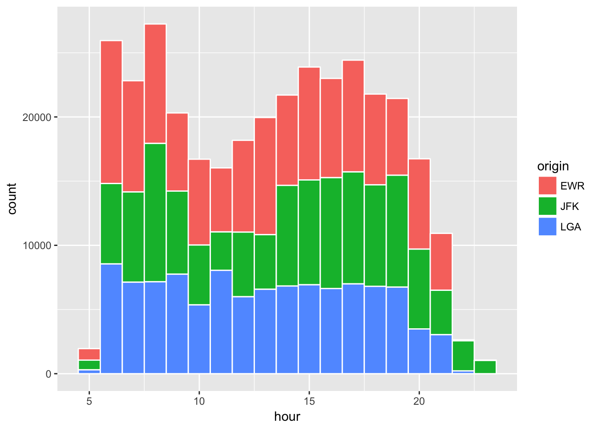
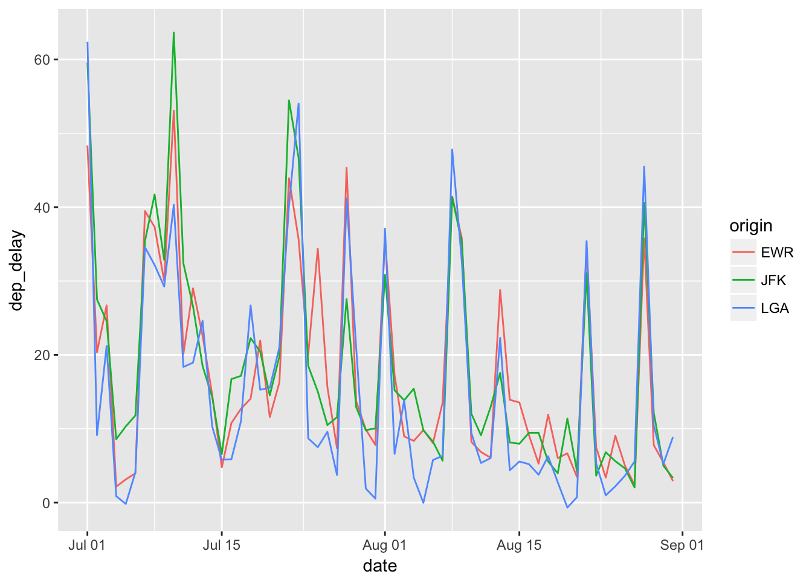

1.3 Arts & Carfts
Crafts
Let’s look at the six types of data wrangling functions in the dplyr package.
filter(): subsets rows (e.g. observations) in a data frame. We put in logical vector(s).select(): subsets columns (e.g. variables) in a data frame. We put in column name(s).arrange(): orders rows in a data frame. We put in column names(s).summarise(): collapses a data frame into a row(s) of summary statistics. We put in summary functions (e.g. statistics functions) using column names.mutate(): creates a new variable(s) and adds it to the existing columns. We put in window functions (e.g. transforming operations) using column names.group_by(): assigns rows into groups in a data frame. We put in column name(s).
The first argument in all these functions is a data frame, and by knowing this we can easily pipe a sequence of data operations through %>% operator. For example, we want to find average delays in departures and arrivals from New York to St. Paul-Minneapolis airport (MSP). We can take the flight data frame, apply filter() to subset rows into the flights to MSP, and then apply summarise() to calculate the mean statistics. Note that this involves a sequence of data operations, and one can translate it into codes by inserting %>% operator that reads as then.
flights %>% # take the flights data frame, then
filter(dest == "MSP") %>% # filter rows, then
summarise(
# summarise departure and arrival delays into their means and call them mean_dep_delay and mean_arr_delay
mean_dep_delay = mean(dep_delay, na.rm = TRUE),
mean_arr_delay = mean(arr_delay, na.rm = TRUE)
) # calculate the mean, while removing NA values ## # A tibble: 1 × 2
## mean_dep_delay mean_arr_delay
## <dbl> <dbl>
## 1 13.32481 7.270169The = symbol in the summarise() function is used as a column name assignment for the summarized data, and the two arguments inside summarise() are parallel operations, which in this case are the mean function applied to different variables. In summarise(), one can use summary functions that takes a vector and outputs a single value.
Each time we apply %>% operator above, we pass a modified data frame from one data operation to another through the first argument. This code is equivalent to
## # A tibble: 1 × 2
## mean_dep_delay mean_arr_delay
## <dbl> <dbl>
## 1 13.32481 7.270169You will quickly learn that %>% operator makes the code much easier to read, write, and edit and why that is so important.
Let’s add a few more lines to the above example. Say, we want to see the average delays by carrier and sort the results by the number of observations (e.g. flights) in descending order.
flight_stats_MSP <- flights %>% # assign the results in an object named "flight_stats"
filter(dest == "MSP") %>%
group_by(carrier) %>% # group rows by carrier
summarise(
n_obs = n(), # count number of rows
mean_dep_delay = mean(dep_delay, na.rm = TRUE),
mean_arr_delay = mean(arr_delay, na.rm = TRUE)
) %>%
arrange(desc(n_obs)) # sort by n_obs in descending order
flight_stats_MSP # show flight_stats object## # A tibble: 6 × 4
## carrier n_obs mean_dep_delay mean_arr_delay
## <chr> <int> <dbl> <dbl>
## 1 DL 2864 10.651392 4.035702
## 2 EV 1773 17.093413 10.527995
## 3 MQ 1293 8.255457 9.559350
## 4 9E 1249 19.658113 8.089776
## 5 OO 4 0.750000 -2.000000
## 6 UA 2 -6.000000 -5.500000Carrier variable is expressed in International Air Transportation Association (IATA) code, so let’s add a column by joining a data frame called “airlines” that contains information on IATA codes and airline names. In Rstudio, you can find the airlines data frame under Environment tab (in the upper right corner) by switching the display option from Global Environment to package:nycflights13. To inspect the data frame, type View(airlines) in the R console (in the left bottom corner). Also, more generally, type data() in the console to see a list of all datasets that are loaded with libraries.
left_join(flight_stats_MSP, airlines, by="carrier") %>%
# left_join(a,b, by="var") means joining matching rows from b to a by identifier named "var".
kable(digits=2) # prints a better-looking table | carrier | n_obs | mean_dep_delay | mean_arr_delay | name |
|---|---|---|---|---|
| DL | 2864 | 10.65 | 4.04 | Delta Air Lines Inc. |
| EV | 1773 | 17.09 | 10.53 | ExpressJet Airlines Inc. |
| MQ | 1293 | 8.26 | 9.56 | Envoy Air |
| 9E | 1249 | 19.66 | 8.09 | Endeavor Air Inc. |
| OO | 4 | 0.75 | -2.00 | SkyWest Airlines Inc. |
| UA | 2 | -6.00 | -5.50 | United Air Lines Inc. |
Let’s consider an example of adding new variables using mutate().
flights %>%
select(dep_delay, arr_delay, air_time) %>%
# keep only columns named "dep_delay", "arr_delay", and "air_time"
mutate(
gain = arr_delay - dep_delay,
gain_per_hr = gain / (air_time / 60)
# Note: we can refer to "gain" variable as we define.
)## # A tibble: 336,776 × 5
## dep_delay arr_delay air_time gain gain_per_hr
## <dbl> <dbl> <dbl> <dbl> <dbl>
## 1 2 11 227 9 2.378855
## 2 4 20 227 16 4.229075
## 3 2 33 160 31 11.625000
## 4 -1 -18 183 -17 -5.573770
## 5 -6 -25 116 -19 -9.827586
## 6 -4 12 150 16 6.400000
## 7 -5 19 158 24 9.113924
## 8 -3 -14 53 -11 -12.452830
## 9 -3 -8 140 -5 -2.142857
## 10 -2 8 138 10 4.347826
## # ... with 336,766 more rowsNote that by using select(), the data frame now contains only the selected columns “dep_delay”, “arr_delay”, and “air_time” and the new columns defined by window functions in mutate(). The five types of window functions are (1) recycled summary values which are interpreted as a vector of repeated values (any summary function): (2) of ranking or ordering type (row_number(), min_rank(), dense_rank(), cume_dist(),percent_rank(), and ntile()): (3) of offset type, say defining a lagged variable in time series data (lead() and lag()): (4) cumulative aggregates (cumsum(), cummin(), cummax(), cumall(), cumany(), and cummean()): (5) fixed-window rolling aggregates such as windowed mean, median, etc. (see RcppRoll package). You can find a help file for any function, for example, by typing ?cumsum. Knowing what functions are available is useful.
We can also define custom functions and use them in dplyr-style data manipulations. A function takes some arguments and returns an output (Note: a list is used for returning multiple outputs). Arguments are separated by comma "," and matched either by locations or equated object names with "=" sign. The user needs to enter all the arguments of a function except for those that have specified default values. Let’s go through a few examples.
# generate a sequence from 1 to 10 (by the increment of 1) and name it "vec1".
# adding "()"" while making an assignment "<-" means to print the new object.
(vec1 <- 1:10) ## [1] 1 2 3 4 5 6 7 8 9 10(vec2 <- c(vec1, NA, NA)) ## [1] 1 2 3 4 5 6 7 8 9 10 NA NAmy_mean_1 <- function(x) mean(x, na.rm = TRUE)
# This function takes one argument: x and returns the calculation result of mean(x, na.rm = TRUE).
# x is required (and implicitly assumed to be a vector of numeric values).
# mean() is an existing function. The "na.rm" argument of mean() is set to be TRUE.
# Note: this function is defined in one expression (R's execution). Multiple executions are combined with "{ }".
my_mean_1(vec1)## [1] 5.5my_mean_2 <- function(x, na.rm=TRUE) mean(x, na.rm = na.rm)
# Input arguments: x and na.rm (optional with the default value of TRUE)
# Output: the calculation result of mean(x, na.rm = na.rm).
# The "na.rm" argument of mean() is provided as the "na.rm" argument of my_mean_2().
my_mean_2(vec2)## [1] 5.5my_mean_2(vec2, na.rm=FALSE) # not revmoving NA returns NA for the mean calculation. ## [1] NAmy_zscore <- function(x, remove_na=TRUE) {
# blanketing with { } makes a long expression more legible.
(x - my_mean_2(x, na.rm = remove_na))/sd(x, na.rm = remove_na)
}
# Inputs: x and remove_na (optional: default = TRUE)
# Output: z-score of vector x
# Note: this function uses a recycling rule of R.
# my_mean() and sd() are scalers but are interpreted as a vector of repeated valuses with the length of x.
my_zscore(vec1) %>% round(2)## [1] -1.49 -1.16 -0.83 -0.50 -0.17 0.17 0.50 0.83 1.16 1.49my_dow <- function(date) {
dow <- as.POSIXlt(date)[['wday']] + 1
# as.POSIXlt(date)[['wday']] returns integers 0, 1, 2, .. 6, for Sun, Mon, ... Sat.
# Here we extract one item from a vector (Sun, Mon, ..., Sat) by position numbered between 1 to 7.
c("Sun", "Mon", "Tue", "Wed", "Thu", "Fri", "Sat")[dow] # extract "dow"-th element
}
# Input: date in the format of "2017-01-23"
# Output: day of week
Sys.Date() # Sys.Date() returns the date ## [1] "2017-03-29"my_dow(Sys.Date()) ## [1] "Wed"Let’s apply these my_mean_2() and my_zscore() functions inside summarise() and mutate().
flights %>%
select(dep_delay) %>%
summarise(
mean_dep_delay = my_mean_2(dep_delay), # using my_mean_2()
mean_dep_delay_na = my_mean_2(dep_delay, na.rm = FALSE) # this returns NA
) %>%
kable(digits=2)| mean_dep_delay | mean_dep_delay_na |
|---|---|
| 12.64 | NA |
flights_gain <- flights %>%
ungroup() %>%
select(dep_delay, arr_delay, air_time) %>%
mutate(
gain = arr_delay - dep_delay,
gain_per_hr = gain / (air_time / 60),
gain_z = (gain - my_mean_2(gain))/sd(gain, na.rm=TRUE), # using my_mean_2()
gain_per_hr_z = my_zscore(gain_per_hr) # using my_zscore()
)
head(flights_gain) %>%
kable(digits=2)| dep_delay | arr_delay | air_time | gain | gain_per_hr | gain_z | gain_per_hr_z |
|---|---|---|---|---|---|---|
| 2 | 11 | 227 | 9 | 2.38 | 0.81 | 0.50 |
| 4 | 20 | 227 | 16 | 4.23 | 1.20 | 0.67 |
| 2 | 33 | 160 | 31 | 11.62 | 2.03 | 1.33 |
| -1 | -18 | 183 | -17 | -5.57 | -0.63 | -0.21 |
| -6 | -25 | 116 | -19 | -9.83 | -0.74 | -0.59 |
| -4 | 12 | 150 | 16 | 6.40 | 1.20 | 0.86 |
The dplyr package also contains summarise_each() function that can be used to apply standard summary functions to each column of variables. This is easy to use when there is only single argument, say mean(vec1). Passing through multiple arguments, say mean(vec2, na.rm=TRUE), involves some complication with syntax. Let’s first try removing rows that contain missing (NA) values and then apply summarise_each(). The concatenated function name indicates which function is used to generate the summary.
flights_gain %>%
select(-contains("_z")) %>%
# deselect variables whose names contain "_z" using "-" sign in front.
filter(!is.na(dep_delay) & !is.na(arr_delay)) %>%
# filter out rows that have NA values in dep_delay or arr_deplay
summarise_each(c("mean", "sd")) %>%
# summarise_each(func_names) applies functions named func_names to each column.
round(digits=2) ## # A tibble: 1 × 10
## dep_delay_mean arr_delay_mean air_time_mean gain_mean gain_per_hr_mean
## <dbl> <dbl> <dbl> <dbl> <dbl>
## 1 12.56 6.9 150.69 -5.66 -3.26
## # ... with 5 more variables: dep_delay_sd <dbl>, arr_delay_sd <dbl>,
## # air_time_sd <dbl>, gain_sd <dbl>, gain_per_hr_sd <dbl>The method for passing multiple arguments or using custom summary functions is to use a list generated by funs().
my_mean_fun <- funs(m1 = my_mean_2, m2 = "my_mean_2", m3 = my_mean_2(., na.rm=TRUE))
# funs() generates a list of functions calls that can be passed through summarise_each(): see ?funs
# m1: function object e.g. my_mean_2
# m2: function name e.g. "my_mean_2"
# m3: function call with . parameter e.g. my_mean_2(., na.rm=TRUE)
flights_gain %>%
select(-contains("_z")) %>%
summarise_each(my_mean_fun) %>%
round(digits=2)## # A tibble: 1 × 15
## dep_delay_m1 arr_delay_m1 air_time_m1 gain_m1 gain_per_hr_m1
## <dbl> <dbl> <dbl> <dbl> <dbl>
## 1 12.64 6.9 150.69 -5.66 -3.26
## # ... with 10 more variables: dep_delay_m2 <dbl>, arr_delay_m2 <dbl>,
## # air_time_m2 <dbl>, gain_m2 <dbl>, gain_per_hr_m2 <dbl>,
## # dep_delay_m3 <dbl>, arr_delay_m3 <dbl>, air_time_m3 <dbl>,
## # gain_m3 <dbl>, gain_per_hr_m3 <dbl>Arts
Now let’s cover the basics of data visualization using ggplot2 package. There are three essential components to graphics in the ggplot2 syntax: data, aes, and geom (ModernDive open-source textbook). This implements a philosophy stated as follows;
A statistical graphic is a mapping of data variables to aesthetic attributes of geometric objects.
— (Wilkinson 2005)
While coding complex graphics via ggplot() may appear intimidating at first, they boil down to the three primary components:
data: a data frame e.g. the first argument in
ggplot(data, ...).aes: specifications for x-y, color, shape, and size. e.g.
aes(x = var_x, y = var_y, shape = var_z)geom: geometric objects such as points, lines, bars, etc. e.g.
geom_point(),geom_line(),geom_histogram()
Since R offers great flexibility with graphics, one can further combine secondary components such as:
stat: data transformation, overlay of statistical inferences etc.
scales: scaling data points etc.
coord: Cartesian coordinates, polar coordinates, mapping projections etc.
facet: laying out multiple plot panels in a grid etc.
and more. Following ModernDive, let’s go over five basic types of plots: scatter-plots, line-graphs, boxplots, histograms, and barplots.
Let’s start with barplots by examining whether there is any obvious pattern of flight distribution across airport origins in New York. A barplot shows counts by category, a simple visualization.
ggplot(data = flights, # the first argument is the data frame
mapping = aes(x = origin)) + # the second argument is "mapping", which is aes()
geom_bar() # after "+" piping operator of ggplot(), we add geom_XXX() elements We can make this more informative and aesthetic.
ggplot(data = flights,
mapping = aes(x = origin, fill = origin)) + # here "fill" gives bars distinct colors
geom_bar() +
facet_wrap( ~ hour) # "facet_wrap( ~ var)" generates a grid of plots for each value of var 
Another way to see the same information is a histogram.
flights %>%
filter(hour >= 5) %>% # exclude hour earlier than 5 a.m.
ggplot(aes(x = hour, fill = origin )) + geom_histogram(binwidth = 1, color = "white") 
Mornings and late afternoons get busy, but there is not much difference across flight origins. Is there a pattern throughout the year? Let’s take the average of departure delays for each day by flight origin and plot as a time series.
delay_day <- flights %>%
group_by(origin, year, month, day) %>%
summarise(dep_delay = mean(dep_delay, na.rm = TRUE)) %>%
mutate(date = as.Date(paste(year, month, day), format="%Y %m %d")) %>%
filter(!is.na(dep_delay)) # exclude rows with dep_delay == NA
delay_day %>% # "facet_grid( var ~ .)" is similar to "facet_wrap( ~ var)"
ggplot(aes(x = date, y = dep_delay)) + geom_line() + facet_grid( origin ~ . ) 
Are the three series correlated? Let’s look at a few months more closely.
delay_day %>%
filter("2013-07-01" <= date, "2013-08-31" >= date) %>%
ggplot(aes(x = date, y = dep_delay, color = origin)) + geom_line() 
We see similar patterns of speakes and troughs occuring on certain days. Is the pattern cyclical? Let’s compare by day of the week.
delay_day <- flights %>%
group_by(year, month, day) %>%
summarise(dep_delay = mean(dep_delay, na.rm = TRUE)) %>%
mutate(date = as.Date(paste(year, month, day), format="%Y %m %d"), # date defined by as.Data() function
wday = my_dow(date),
weekend = wday %in% c("Sat", "Sun") # %in% operator: A %in% B checks whether each element of A is in B.
)
delay_day$wday[1:20] %>% print()## [1] "Tue" "Wed" "Thu" "Fri" "Sat" "Sun" "Mon" "Tue" "Wed" "Thu" "Fri"
## [12] "Sat" "Sun" "Mon" "Tue" "Wed" "Thu" "Fri" "Sat" "Sun"delay_day$wday <- factor(delay_day$wday,
levels = c("Mon", "Tue", "Wed", "Thu", "Fri", "Sat", "Sun"))
# adding labels and rearranging the order starting on Mon
delay_day$wday[1:20] %>% print() ## [1] Tue Wed Thu Fri Sat Sun Mon Tue Wed Thu Fri Sat Sun Mon Tue Wed Thu
## [18] Fri Sat Sun
## Levels: Mon Tue Wed Thu Fri Sat Sundelay_day %>%
filter(!is.na(dep_delay)) %>%
ggplot(aes(x = wday, y = dep_delay, fill = weekend)) + geom_boxplot() 
It appears that average delays are longer on Thursdays and Fridays and shorter on Saturdays.
delay_day_hr <- flights %>%
group_by(year, month, day, hour) %>% # Note: "hour" is added here
summarise(
n_obs = n(),
dep_delay = mean(dep_delay, na.rm = TRUE),
arr_delay = mean(arr_delay, na.rm = TRUE)
# gain = mean(arr_delay - dep_delay, na.rm = TRUE),
# dist = mean(distance, na.rm = TRUE)
) %>%
mutate(date = as.Date(paste(year, month, day), format="%Y %m %d"),
wday = c("Sun", "Mon", "Tue", "Wed", "Thu", "Fri", "Sat")[as.POSIXlt(date)[['wday']] + 1]
)
plot_delay <- delay_day_hr %>% filter(!is.na(dep_delay)) %>%
ggplot(aes(x = n_obs, y = dep_delay)) + geom_point(alpha = 0.1)
# plot of n_obs and the average dep_delay by date-hour
plot_delay 
The plot shows that by the density of data points along the horizontal axis, the number of flights is not evenly distributed across all date-hours. That is, some days are businer than others, and some hours are busiers than others. The distribution of n_obs has two peaks, showing that there are very slow days or hours at the airports (e.g. less than 10 flights flying out of New York city in hour). We might guess that the delays in the slow days or hours be caused by bad weather in New York (or in other cities to an extent). On the other hand, we may wonder if the excess delays in peak hours, compared to slow hours, are caused by congestion at the airports. Let’s find out by fitting curves that trace out the relationships between n_obs and dep_delay.
plot_delay +
geom_smooth() # geom_smooth() addes a layer of fitted curve(s) ## `geom_smooth()` using method = 'gam'
plot_delay +
# additional aes() argument for applying different colors to the day of the week
geom_smooth(aes(color = wday), se=FALSE) ## `geom_smooth()` using method = 'gam'
Surprisingly, dep_delay do not change over the range of n_obs, including the peak hours. There are more dealys on Thursdays and Fridays and less delays on Saturdays, but we see no evidence of congestion as a cause of delay.
Let’s take a closer look at the distribution of departure delays. If it is not normal, we may want to apply a transformation.
delay_day_hr %>% filter(!is.na(dep_delay)) %>%
ggplot(aes(x = dep_delay)) + geom_histogram(color = "white") # Note: the distribution is skewed ## `stat_bin()` using `bins = 30`. Pick better value with `binwidth`.
delay_day_hr$dep_delay_shifted <- delay_day_hr %>% with(dep_delay - min(dep_delay, na.rm = TRUE) + 1)
# with() function: it takes a data frame in the first argument and allows one to use variable names inside the data frame
# Before we apply a logarithmic transformation, we shift the variable so that its minimum is greater than zero.
delay_day_hr %>%
ungroup() %>% # removing group_by() attribute
select(dep_delay, dep_delay_shifted) %>%
with(
apply(., 2, summary)
# apply(data, num, fun) applies function "fun" for each item of dimention "num" (1 = cows, 2= columns) of the data frame
# In apply(), data comes from with() function and contains two selected variables.
# These variables are referened by "." (all variables)
) ## dep_delay dep_delay_shifted
## Min. -18.000 1.00
## 1st Qu. 1.054 20.05
## Median 6.571 25.57
## Mean 12.990 31.99
## 3rd Qu. 15.440 34.44
## Max. 269.000 288.00
## NA's 13.000 13.00delay_day_hr %>% filter(!is.na(dep_delay_shifted), dep_delay_shifted > 5) %>%
ggplot(aes(x = dep_delay_shifted)) +
scale_x_log10() +
# Under the log of 10 transformation, the distribution looks closer to a normal distribution.
geom_histogram(color = "white") ## `stat_bin()` using `bins = 30`. Pick better value with `binwidth`.
delay_day_hr %>% filter(!is.na(dep_delay_shifted), dep_delay_shifted > 5) %>%
ggplot(aes(x = dep_delay_shifted)) +
scale_x_continuous(trans = "log") +
# Alternatively, one can apply the natural logarithm to transform a variable. Histogram shows no difference here.
geom_histogram(color = "white")## `stat_bin()` using `bins = 30`. Pick better value with `binwidth`.
delay_day_hr %>% filter(!is.na(dep_delay_shifted), dep_delay_shifted > 5) %>%
ggplot(aes(x = n_obs, y = dep_delay_shifted)) +
scale_y_log10() +
# With the transformation scale_y_log10(), geom_point() and geom_smooth() are plotted.
geom_point(alpha = 0.1) +
geom_smooth() ## `geom_smooth()` using method = 'gam'
Under the logarithmic transformation, we still see no evidence that busy hours have more delays than slow hours. This appears to suggest that the airports in New York City manage fluctuating numbers of flights very well without causing congestion.
References
Wilkinson, Leland. 2005. The Grammar of Graphics.